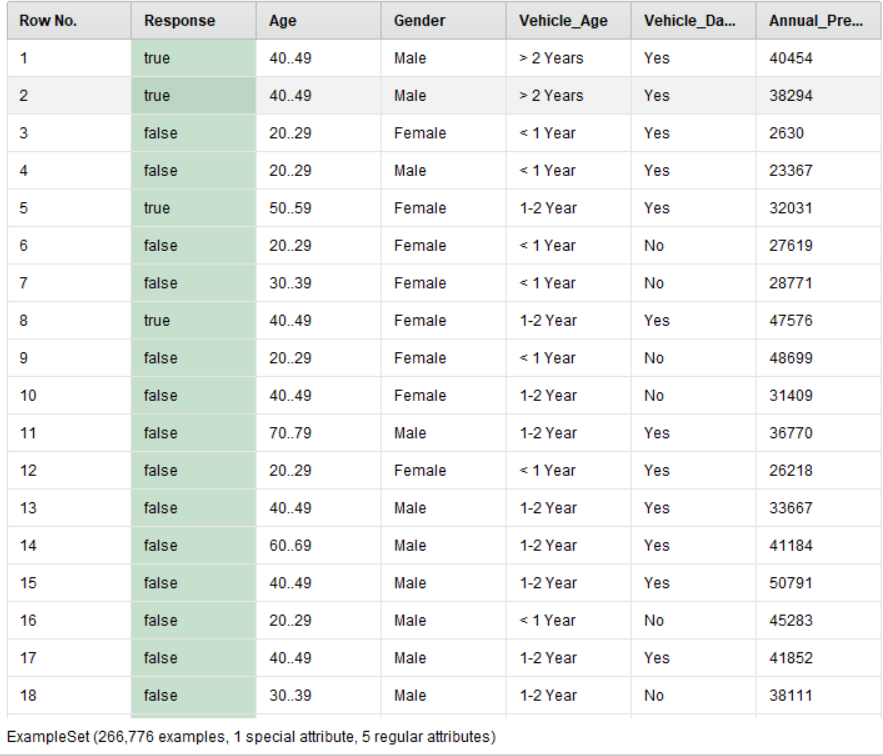
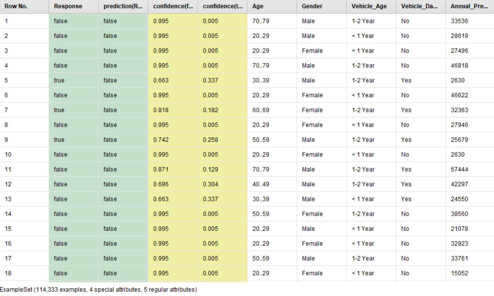
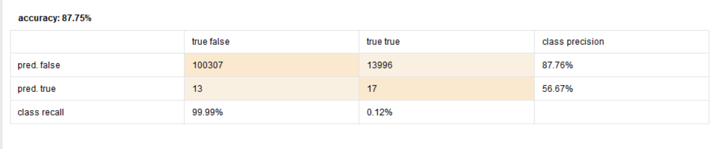

Insurance Client Prediction

Introduction
Due to my interest in data science field, I decided to learn more about statistics, datasets, and tools that data scientists use to process the data that they have and turn them into useful information. Long story short, I found this interesting dataset about an insurance company that want to predict who will be their next client based on the data they collected. I wanted to show which age range of people that will most likely be interested in using this company's insurance, but due to the limitation of tools and my lack of experience, I can only show how good decision tree model is for this case and how many customer they will get based on the test set that they got (unlabeled dataset).
Case
The dataset can be downloaded here. I'm using decision tree model hence my approach can be called supervised learning, where the response attribute is the label.
{kind=link}
Insurance Dataset
We can see that I only use 5 support attributes that I assume has the highest impact on the label.

RapidMiner Process
The picture above is the overall data processing from the preprocessing all the way to the model application. Before we can use decision tree model, we need to fulfill the datatype requirement which is the data can't be numerical, therefore I transform the response type (1/0) to binomial (true/false) After that, I bin the age atribute where each bin has an interval of 10 (10..19, 20..29). And then, I split the dataset into two parts. First the train set for 70% size and then the test set for 30% size. And now our data is ready.
Result
{kind=link}
Result

Result Rule

Decision Tree

Test Result

ROC
{kind=link}
Performance
After putting the data into our model, we get the result above. The result tells us that our model has 87,75% accuracy of prediction. Even though this is a pretty high number, we can see the imbalance of the ROC curve where our hope that the total of AUC (Area Under Curve) will get closer to 1. Judging by the curve, we can see that this model is not really good at predicting the true responses. This might be caused by the disproportion of the data that we used for the model training where the false response significantly outnumbered the true response with the ratio of 9:1.
In the end, we learn that the disproportion of the train data can cause the prediction to become slightly inaccurate. However, we could prevent This error by cross-validating the data with k-fold or we can just cut out some of the data to make them more balanced.